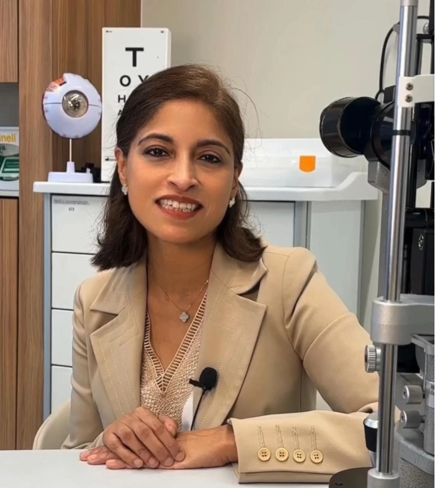

Home/Dr Goawalla
Dr Amynah Goawalla
Consultant Ophthalmologist and Oculoplastic Surgeon. Cataract, lens and eyelid surgery, and general ophthalmology, in central London.
Dr Goawalla studied medicine at Guy’s and St Thomas’ hospitals, the University of London. She qualified as a medical doctor in 1999.
She specialised in ophthalmology and then undertook subspeciality fellowships in oculoplastic surgery.
She has been a consultant eye surgeon since 2013 and a substantive consultant at Imperial College Healthcare since 2017.
She has also had established private practices at The London Clinic, Harley Street and The Cromwell Hospital, Kensington for several years. She now sees and treats patients at LIPS Healthcare, Battersea as well.
- FRCOphth
- Royal College of Ophthalmologists
- 4639480
- GMC registration

How she works
with patients.
The person, not only the eye. Your work, driving, reading and wider health shape what a good result means for you.
Honest about limits. What treatment can offer, what it cannot, and its risks, explained in plain language before you decide.
Unhurried. Eye care can feel unfamiliar. There is room for questions, and for taking time to decide.

Patient reviews
In their
own words.
from 10 reviews
from 33 reviews
- ★★★★★
“I had a wonderful experience with Ms. Amynah Goawalla for my eye surgery. From the very first consultation through the surgery and follow-up care, she made me feel completely comfortable and reassured. Everything was explained clearly and patiently, which really helped ease any anxiety I had. The surgery itself went very smoothly, and I truly appreciated the calm, caring and professional approach throughout. I’m very grateful for the excellent care and would highly recommend her to anyone seeking outstanding eye care.”
Sangeeta D.March 2026 · Trustpilot
- ★★★★★
“I went in to get my eye checked as it had been itchy, watery, and swollen. Dr. Amynah Goawalla immediately identified that it was a corneal ulcer within seconds. She was incredibly quick, thorough, and clear in explaining the problem, the treatment, and what to avoid. Her communication was excellent and she made me feel very comfortable throughout. She’s extremely knowledgeable and friendly - I’d highly recommend her.”
Dania A.Google review
- ★★★★★
“Fine attention to detail, and quality of service, in the treatment of cataract surgery. I have received the most superb treatment and service, for the repair of both eyes with cataracts and the fitting of bi-focal lenses. I cannot recommend Ms Amynah Goawalla more strongly, she has carried our superb work on my eyes, for which I am most grateful.”
Gerald F.August 2026 · Trustpilot
- ★★★★★
“My visits to, and treatment given to me, by Ms Amynah Goawalla, London Eye Surgeon, for cataracts has been superb, and most beneficial to me. I cannot recommend her strongly enough. Her efforts and attention to her work and to detail, is very impressive, and I am 100% satisfied with the results, and most grateful to her for her kind attention.”
Gerald F.Google review
- ★★★★★
“A seemless process with compassion interest and a genuine understanding of how to reassure the client. When you are undergoing eye surgery given the complexity and nature of the process and all it entails to feel so positive and relaxed takes a special skill. Expertise and understanding are paramount and to feel so comfortable and confident throughout the whole process is testament to her professionalism. Would positively recommend Dr Goawalla to any person considering eye surgery. Also the reactive responses and assistance from her PA receives the highest praise. Thank you both.”
- ★★★★★
“Dr Goawalla is extremely skilled at what she does, I was referred to her from my GP because I had irritation in both eyes for quite some time and she found the cause of the problem straight away. I then had 3 extra follow up appointments and each time she made sure I was progressing and getting better with the correct medication. She is very professional and friendly, she makes you feel comfortable and is genuinely a really nice person. Thank you for all of your help, I can’t tell you in words how much I appreciate everything you have done.”
Bhav P.Google review
- ★★★★★
“Dr Goawalla is by far the best eye doctor I’ve had. She’s kind, knowledgeable, takes you seriously and very gentle. She always asks if everything feels alright during exams and is thorough in explaining diagnosis and treatment with excellent follow-up. After meeting 10+ doctors in London, I can say she stands out and I’d recommend her to any patient with eye concerns.”
NatashaSeptember 2021 · Trustpilot
- ★★★★★
“I have had multiple surgeries, but none of the surgeons have been concerned about post op as much as Miss Goawala. She explained the pre op and post op procedures with a lot of patience and clarity.”
Rosalina D.Google review
- ★★★★★
“I had multi focal cataract lens replacement surgery from Ms Goawalla. I felt the treatment was very well done and Ms Goawalla and her PA did all they could to make the procedure straightforward and manageable.”
Janice K.July 2026 · Trustpilot
- ★★★★★
“An immediate diagnosis and medicine to treat a problem i had suffered from for over 1 year. I couldn’t recommend Miss Goawalla more.”
Claire S.Google review
- ★★★★★
“I saw Dr Goawalla after I was referred by my optician to do a thorough check following the standard eye test. Dr Goawalla made me feel at ease, listened to my concern and explained very well the extra checks she was going to perform. She is really knowledgeable and I would definitely recommend her for any ophthalmologic need.”
TatianaNovember 2021 · Trustpilot
- ★★★★★
“Caring, thorough and nice manner.”
Lyn W.Google review
- ★★★★★
“Dr. Goawalla was professional and reassuring. She was able to answer all my questions and carry out the required procedure efficiently. I would recommend her to anyone requiring help with their eyes.”
- ★★★★★
“I am so pleased to have had Dr Goawalla dealing with my eyes. Such a wonderful experience, and left Harley street feeling I was in capable hands.”
Daniel O.September 2025 · Trustpilot
- ★★★★★
“I have had two minor surgeries performed by Dr Goawalla in 2021. I’m very happy about the outcomes and also about the communication and the entire experience: Dr Goawalla takes her time to listen to patients and understand their situation.”
Maria B.January 2022 · Trustpilot
- ★★★★★
“I have had two procedures with Dr.Goawalla and each time she has been so kind and patient. She explained everything very clearly and made me feel at ease.”
Seen Dr Goawalla? Your review helps other patients.
Leave a Google reviewLeave a Trustpilot reviewAll Google reviewsAll Trustpilot reviewsBook a consultation
with Dr Goawalla.
Call or email the secretary for the clinic you choose. Email is often the quickest way, at any time of day. The secretary can also explain fees and what your insurer needs.
You can also book directly with The London Clinic on 020 7935 4444 and The Cromwell Hospital on 020 7460 5700.